固定 patch 网格在入口就把 1px 级结构做成低通。 我们给编码器一条全点可达 + mass 归一的细粒度通道： token 可以更少，但细线仍有机会被表达。 线都重建不了，就别谈夹角与小字。
人看不清会多看几眼。模型若在第一层把细节糊进大格子，后面注意力再强， 也只能围着背景主能量转——不是「不聪明」，是通道先断了。
大字促销好认；底部免责声明又小又淡，最容易被网格淹没。
角标、站名、细线标注：人能扫到，模型常先被背景吸走。
尖角 / 接触角往往只占几个像素，决策却依赖它们。
点 → 线 → 角 → 字 → 场景。折线都立不住，夹角无从谈起。
绿：本页主证据停在「折线可达」。灰划线：更高层，线失败则免谈。
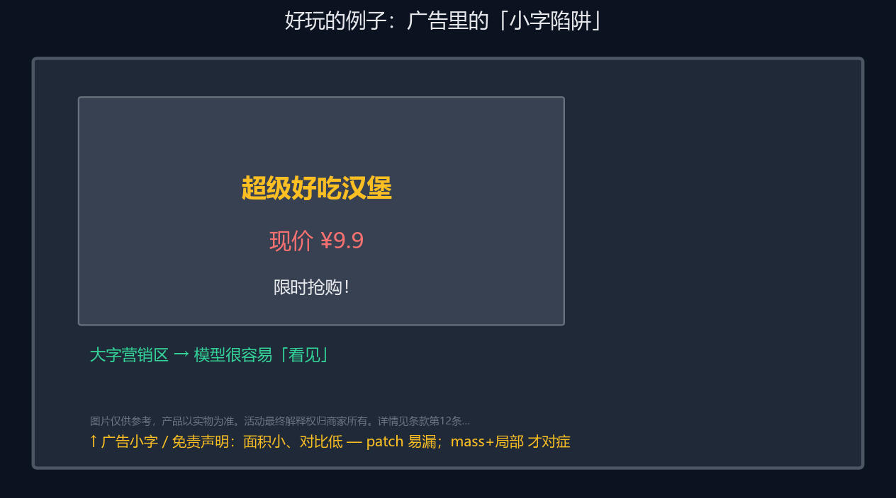
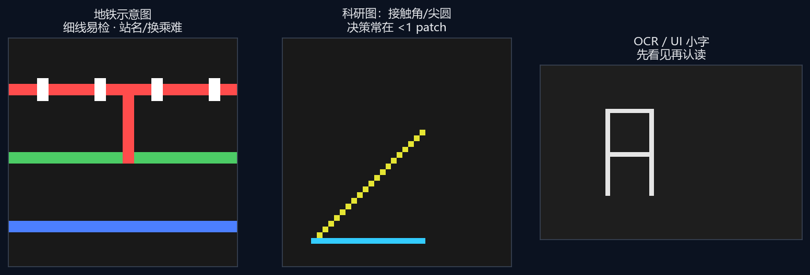
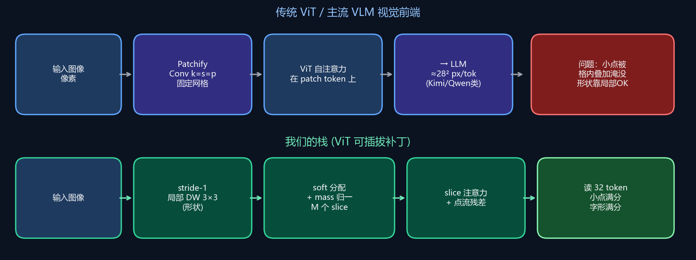
瓶颈往往不是「attention 席位太少」。网格第一层已经做了空间低通； 后面 token 再多，也可能只是在糊掉的表示上互看。
1px 折线几乎全是高频。固定 patch 均值（或 stride 卷积）把功率摊进块均值， 再放大只是色块——不是线。这是「看不见」的物理图像，不必先怪优化。
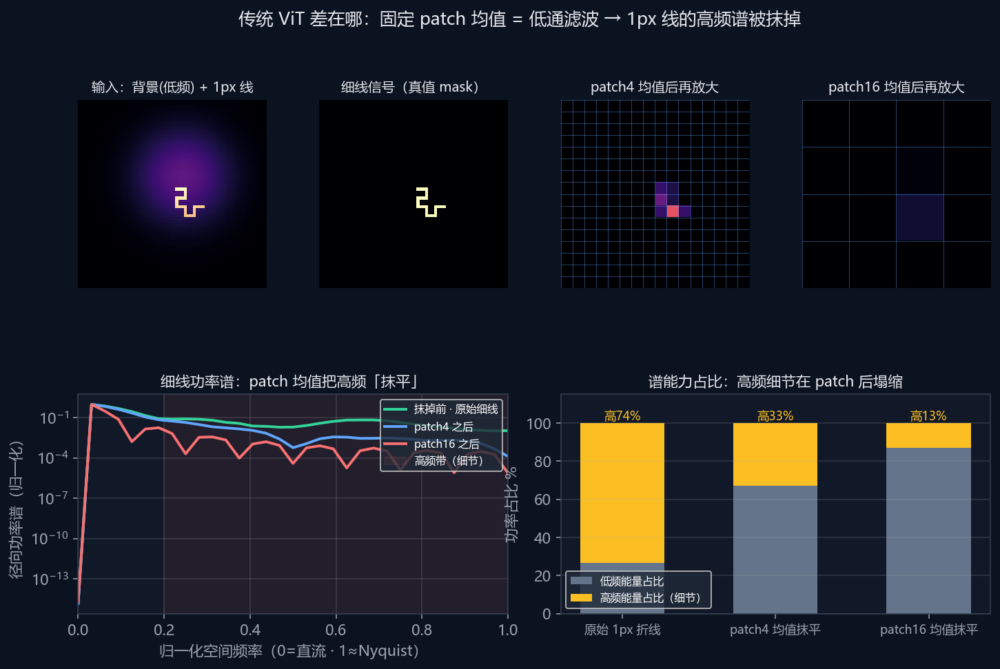
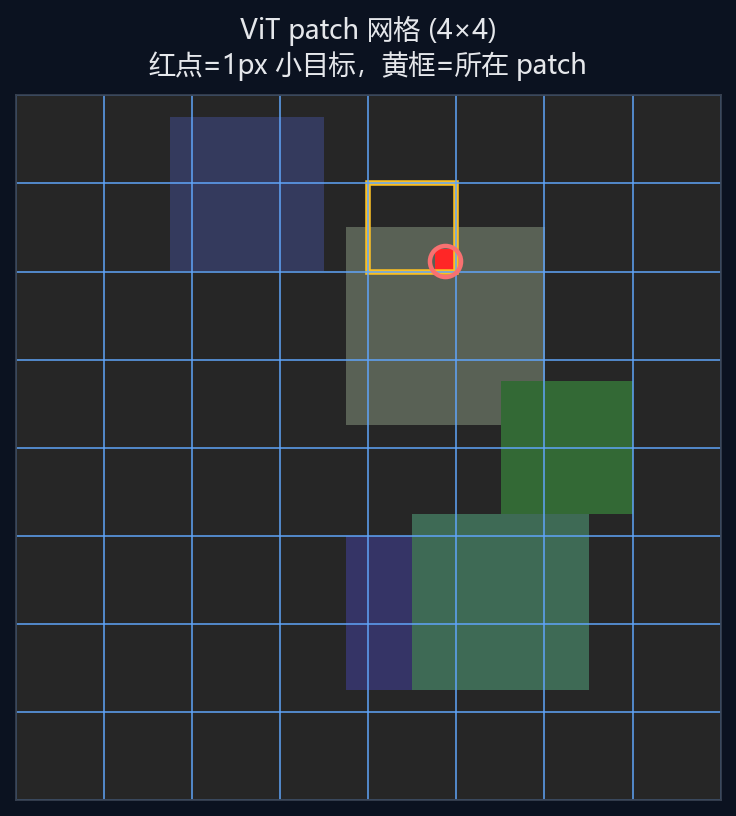
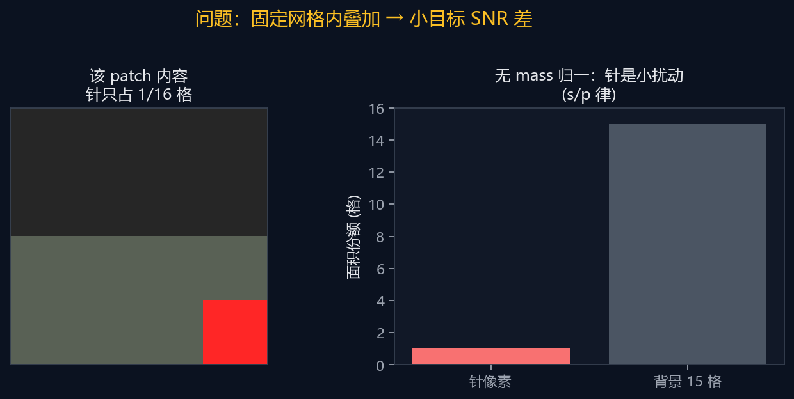
输入原图 RGB（纯红 1px 折线），重建线 mask。 res 64 · batch 32 · 400 step · hard≈35% 装入 16×16 · BCE+Dice。
| 方法 | 结构 | Dice ↑ | IoU | FP / 图 | Recall |
|---|---|---|---|---|---|
| slice + local + mass | 32 槽 + 点流 · ST 防塌 | 1.000 | 1.000 | 0 | 1.000 |
| patch16（ViT 网格） | 16 token · 16×16 格 | 0.153 | 0.085 | ~375 | 0.685 |
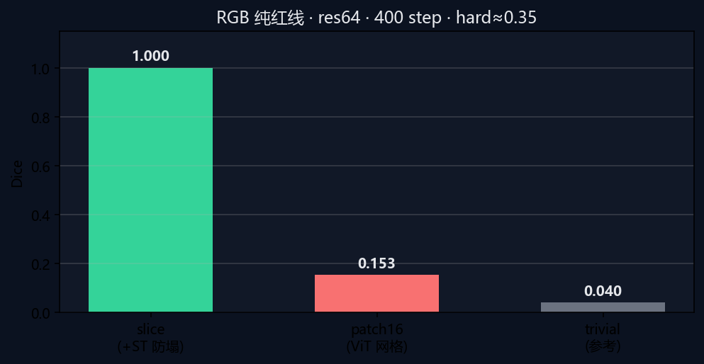
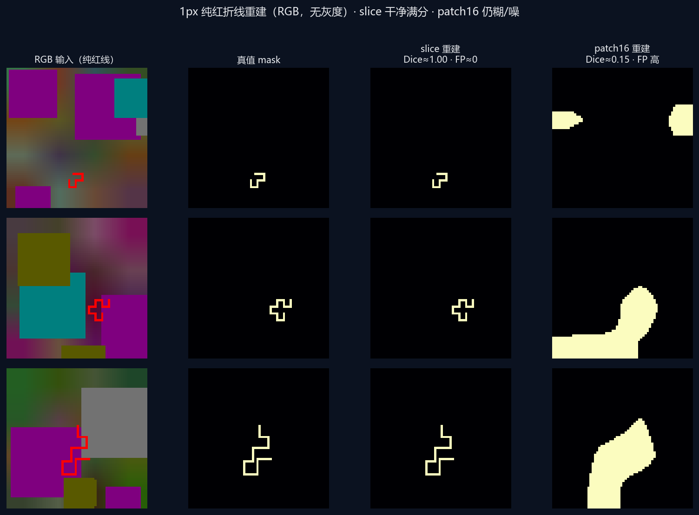
主叙事是细粒度通道：全点可达 + mass，让 1px 结构仍可被编码。 Stiefel / Newton–Schulz 只用于训练中抑制槽方向坍缩（共线）， 不是本页与 patch 的主对比轴。合成任务、小模型——定方向，不报 SOTA。
深度可分离 3×3：先在邻域提结构，不先做降采样。
按内容分进少量槽；分母用分配质量，小目标也能满幅度。
关闭 Gumbel 等有害噪声；默认例如 32 个摘要 token 读出。
只作防方向坍缩；系数对齐 torch.optim.Muon。不管「红线 vs patch」主结论。
合成任务、小模型、可复现——与红线主证据互补，不与百亿视觉塔比绝对分。
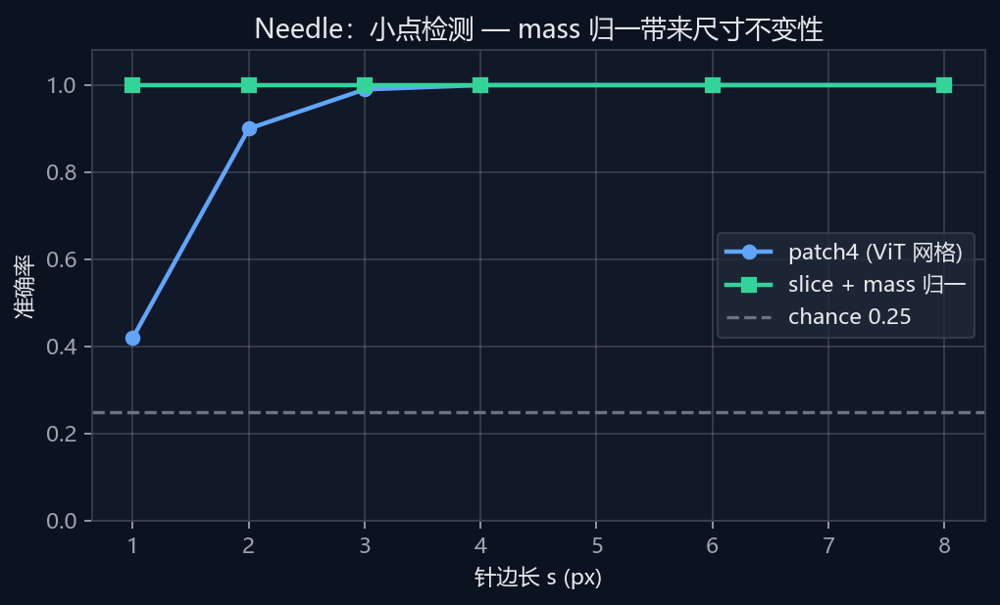
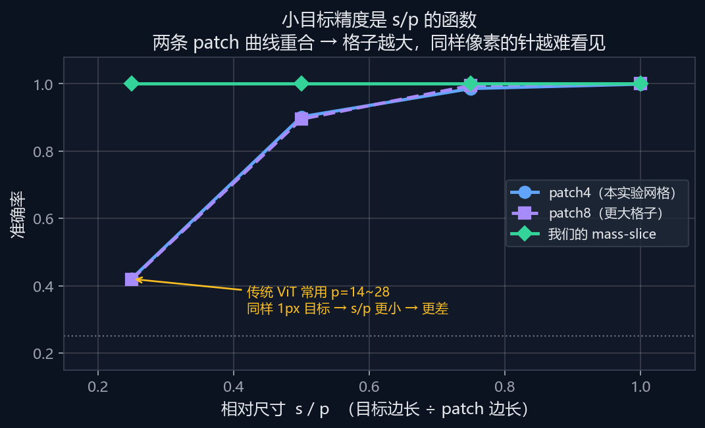
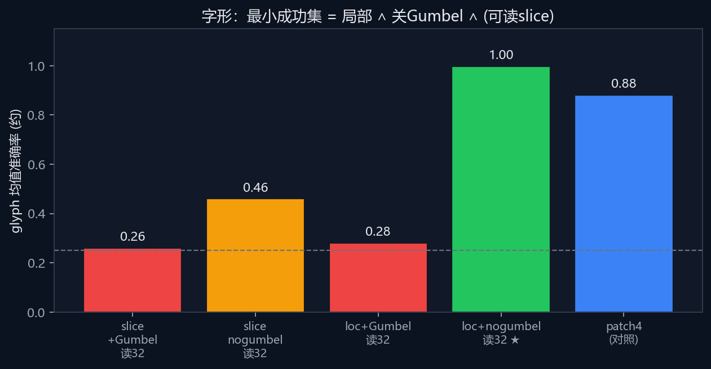
| 能力 | patch 网格 | 我们的栈 |
|---|---|---|
| 极小色块 / 1px 点 | 随 s/p 掉 | 好 |
| 1px 纯红折线 (RGB) | patch16 ≈ 0.15 | slice ≈ 1.00 · FP≈0 |
| 字形结构（有局部时） | 可以 | 完整栈更高 |
| 视觉 token 预算 | 网格常更多 | 可压到很少（如 32） |
本页是架构故事与合成证据，不是大规模预训练 SOTA。
复现与细节见仓库 README.md；图可由 present/ 下脚本重生成。